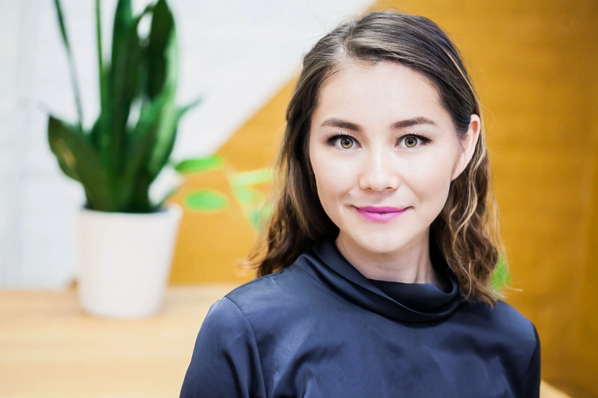

About Me
Full Stack developer with Engineering and Management background. Complex problem-solver with an analytical and driven mindset. Dedicating to achieving demanding development objectives according to tight schedules while producing impeccable code. Experience in health care management and data analysis. Internship experience in a non-profit health care organization. Strong understanding of Electronic Health Records and Electronic Medical Record. Educational training in medical terminology and medical coding. Collaborates well with colleagues and individuals from diverse backgrounds. Strong organizations skills and excellent attention to detail. Process oriented with an eye to perfection. Strong work ethic. Fluent in English, Russian, Kyrgyz and Kazakh.